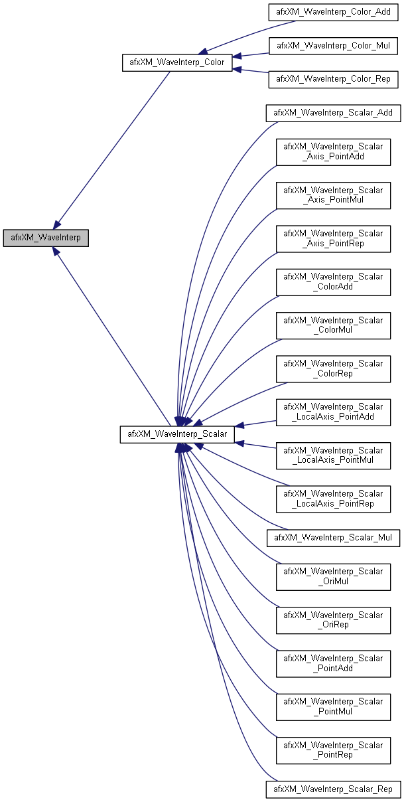

Torque3D - Engine Reference
Main Page
Related Pages
Modules
Namespaces
Classes
Files
Class List
Class Index
Class Hierarchy
Class Members
Public Member Functions
|
Static Public Member Functions
|
List of all members
afxXM_WaveInterp Class Reference
abstract
Inheritance diagram for afxXM_WaveInterp:

[
legend
]
Public Member Functions
virtual void
interpolate
(F32 t,
afxXM_Params
¶ms)=0
virtual void
pulse
()=0
Static Public Member Functions
static F32
lerp
(F32 t, F32 a, F32 b)
The documentation for this class was generated from the following file:
C:/projects/torque3d-qw64q/Engine/source/afx/xm/
afxXM_WaveBase.h
Generated by
1.8.11
 1.8.11
1.8.11